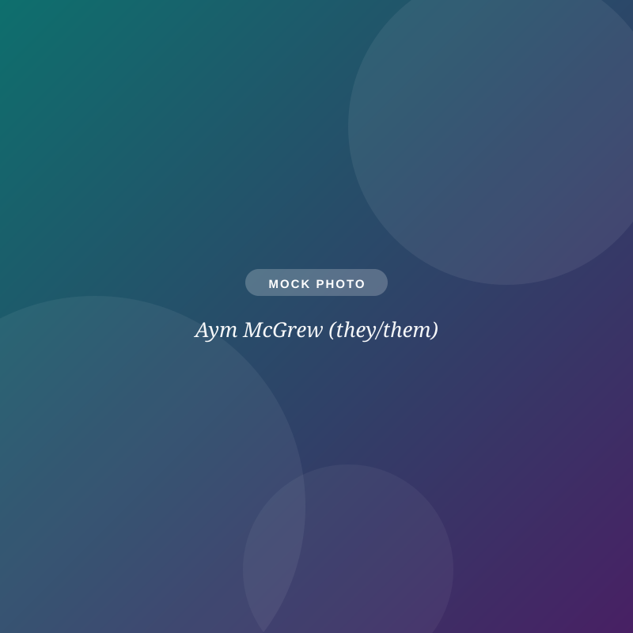

Children, Youth & Community Engagement (Interim)
Aym McGrew
25+ years in ministry, M.A. in Youth Ministry, and a trained spiritual director, serving SOTH through 2026 with InterServe Ministries.
cyf@sothchurch.com